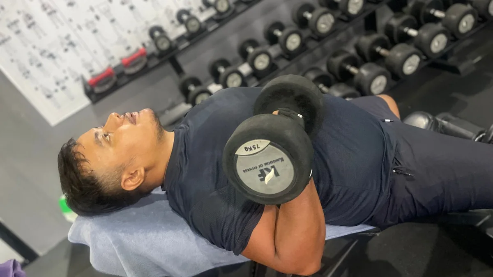
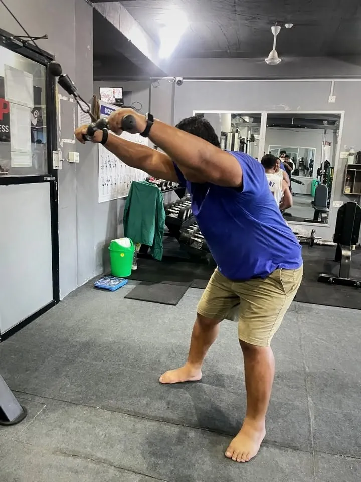

How Many Sets and Reps to Build Muscle? A Simple Guide
How many sets, reps and how much rest to build muscle and strength: weekly sets per muscle, rep ranges, effort, and sample beginner numbers.

For building muscle, a good starting point is 10 or more hard sets per muscle group per week, using roughly 6 to 15 reps per set, with each set taken close to failure (1 to 3 reps left in the tank). For pure strength, use heavier weights for 3 to 6 reps with longer rests.
The exact numbers matter less than two things: training hard enough and doing a little more over time.
Sets: think per week, not per workout
Research on training volume suggests that more weekly sets generally lead to more muscle growth, up to a point. A common evidence-based guideline is at least 10 sets per muscle per week for good growth.
| Level | Sets per muscle per week |
|---|---|
| Beginner | 6–10 |
| Intermediate | 10–15 |
| Advanced | 15–20+ (only if you recover well) |
Example: 3 sets of squats, done 3 times a week, is 9 sets for your thighs per week.
Beginners grow well on less, because everything is new. More is not always better: if you are always sore, tired or your strength is going down, cut back.

Reps: a wide range works
Studies show muscle grows across a wide range of reps, as long as sets are hard. Practically:
| Goal | Reps per set | Effort |
|---|---|---|
| Strength | 3–6 | Heavy, longer rest |
| Muscle growth | 6–15 | Close to failure |
| Muscular endurance | 15–25+ | Lighter, shorter rest |
Most people do well with compound lifts in the 5–10 range (squats, presses, rows, deadlifts) and isolation exercises in the 10–15 range (curls, lateral raises, leg extensions).
Effort: the part most beginners miss
A set of 12 that you could have done 25 reps with does very little. Aim to finish most sets with 1 to 3 reps “in reserve”: you could do a couple more with good form, but not many.
Do not go to absolute failure on heavy squats or deadlifts. That is where form breaks down and injuries happen.
Rest between sets
- Heavy compound lifts: 2 to 3 minutes
- Most muscle-building sets: 1 to 2 minutes
- Small isolation exercises: 60 to 90 seconds
Resting long enough lets you lift more weight on the next set, which helps growth.
How often to train each muscle
Training each muscle 2 times a week works well for most people. It spreads your weekly sets into more manageable sessions. Full-body workouts 3 times a week, or an upper/lower split 4 times a week, both achieve this.
Sample week for a beginner (full body, 3 days)
| Muscle | Exercise per session | Weekly sets |
|---|---|---|
| Thighs/glutes | Squat or leg press, 3 sets | 9 |
| Hamstrings | Romanian deadlift, 3 sets (2 days) | 6 |
| Chest | Bench or dumbbell press, 3 sets | 9 |
| Back | Rows or pulldown, 3 sets | 9 |
| Shoulders | Overhead press, 2 sets | 6 |
| Arms | Curls + pushdowns, 2 sets each (2 days) | 4 each |
This is the structure behind our beginner gym workout plan.
Progress: the real key
Write down your weights and reps. Each week, try to:
- Add 1 rep to your sets, or
- Add a small amount of weight once you hit the top of your rep range.
This is called progressive overload. Without it, even perfect sets and reps stop working.
Don’t forget food and sleep
Muscle is built outside the gym. Eat enough protein (see how much protein you need) and sleep 7 to 9 hours.
Frequently asked questions
Is 3 sets of 10 good for building muscle?
Yes, it is a solid starting point, as long as the sets are challenging and you add weight or reps over time.
Are high reps or low reps better for muscle?
Both work if the sets are hard. Moderate reps (6 to 15) are the most practical for most people.
How many exercises per muscle should I do?
One or two per session is enough for most beginners.
Should every set go to failure?
No. Most sets should stop 1 to 3 reps short of failure. Occasional failure on safe exercises is fine.
Sources
- Dose-response relationship between weekly resistance training volume and muscle growth (Schoenfeld et al., Journal of Sports Sciences, 2017)
- ACSM position stand: progression models in resistance training for healthy adults (American College of Sports Medicine, 2009)
Photo: a member training at Apex Fitness Centre, Urlabari.
General information, not medical advice. Ask a doctor if you have a health condition. Results vary from person to person.
Comments
Loading comments…